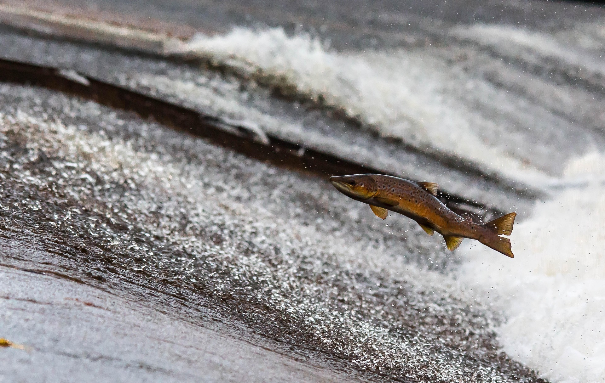

Freshwater Fish of British Columbia
About BC Fish
British Columbia's rivers and lakes are home to abundant trout and salmon. These pristine waters provide ideal habitats that sustain diverse fish populations across the province.
Trout
Rainbow trout are one of the most sought-after fish for anglers in British Columbia. Trout are freshwater fish that belong to the salmon family and are known for their spotted patterns, strong fight, and popularity in both sport fishing and cooking.

Image by Brandon on Unsplash
-
Rainbow Trout
Rainbow trout are known for their vibrant colors and fighting spirit.
-
Cutthroat Trout
Named for the distinctive red slash under their jaw.
-
Bull Trout
Bull trout are a char species requiring extremely clean, cold water.
Salmon
The salmon population is especially important to British Columbia's ecosystem. Salmon are migratory fish that hatch in freshwater, travel to the ocean to grow, and return to rivers to spawn. They play a vital role in the food chain, supporting wildlife, forests, and communities.
Image by Danny Moore from Pixabay
-
Chinook Salmon
Also known as King salmon, Chinook are the largest Pacific salmon species.
-
Coho Salmon
Coho salmon are known for their acrobatic jumps and bright silver sides.
-
Sockeye Salmon
Famous for their dramatic red color during spawning, sockeye salmon are crucial to BC's ecosystem and Indigenous cultures.
Learn More
For additional information about BC's fish species, check out these resources:
Government of BC Official Website
The official website of the Government of British Columbia.
More detailed information on fish species found in BC waters.